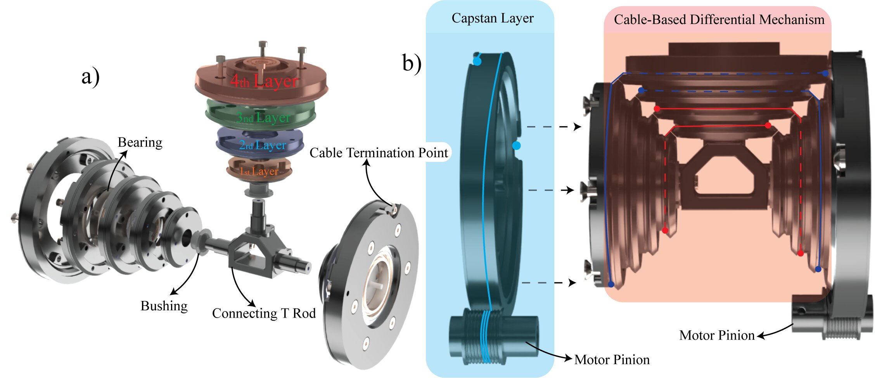
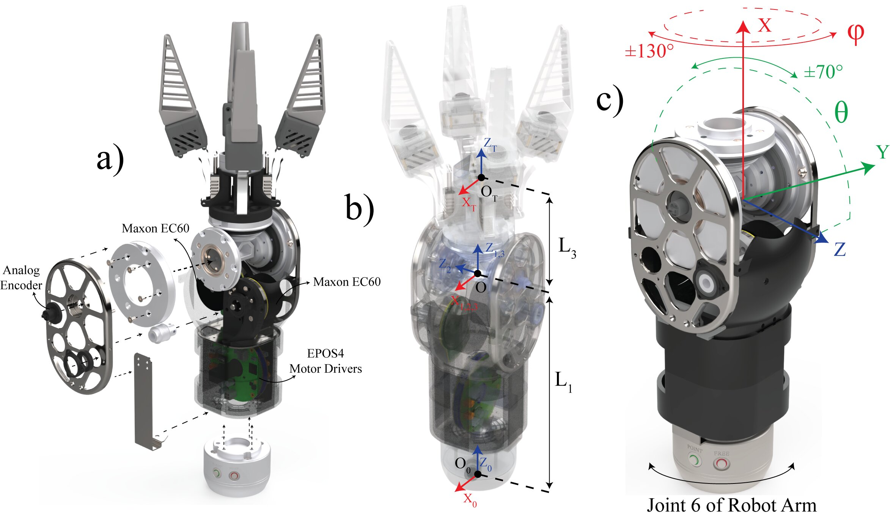
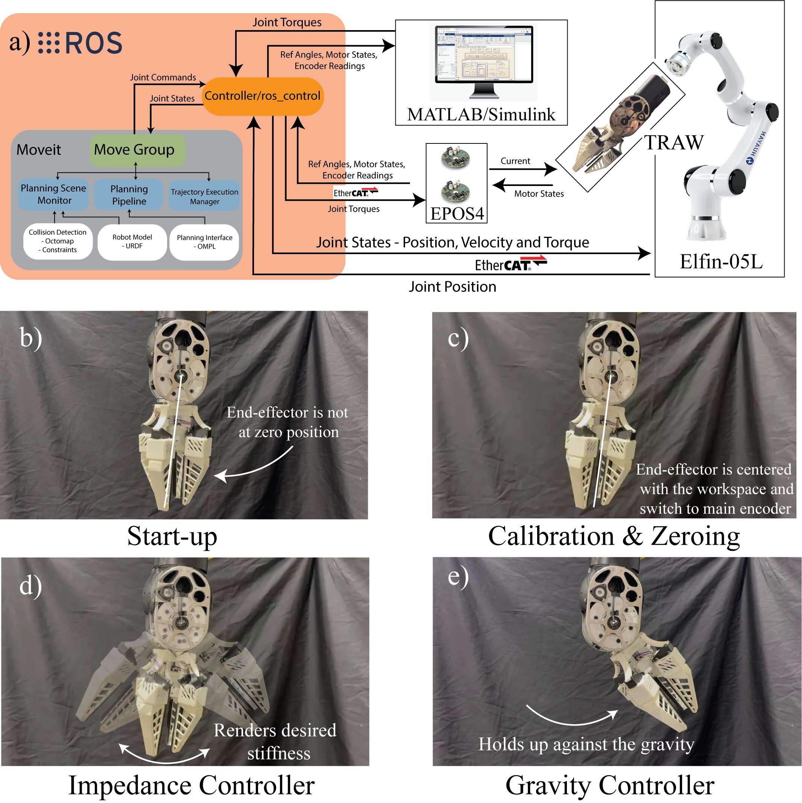
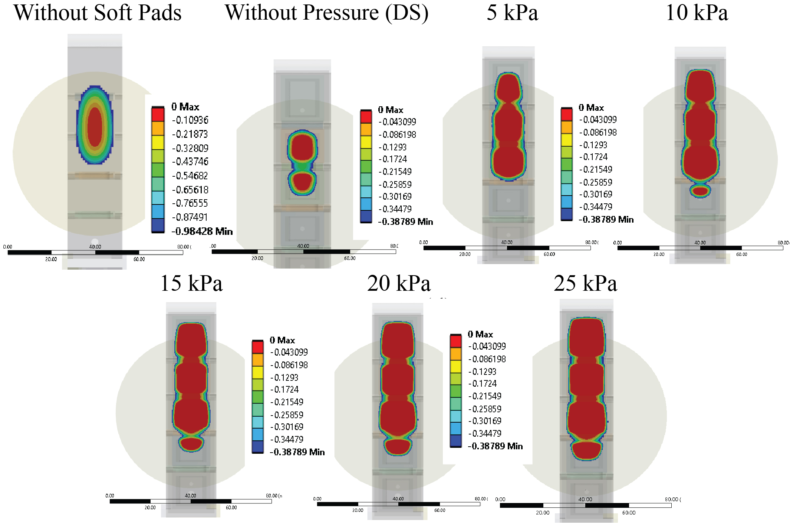
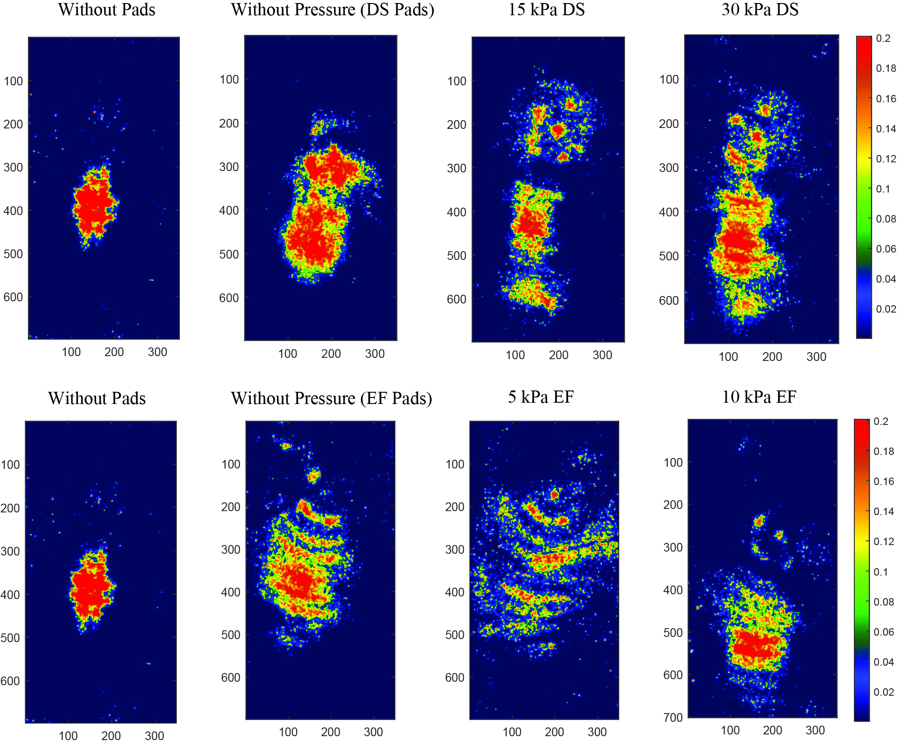
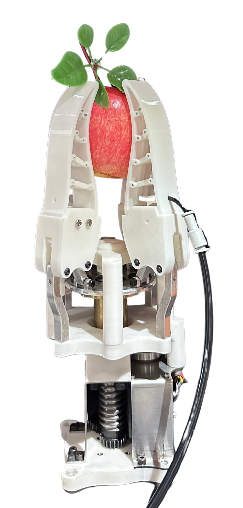
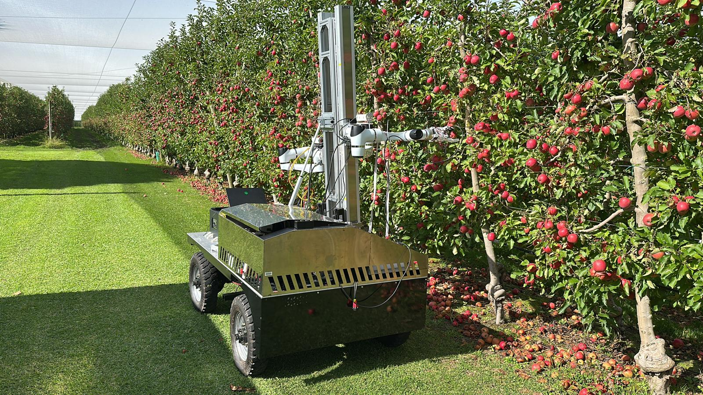

About
Hi, I'm Ali — a robotics and mechatronics engineer and PhD candidate at Monash University, where I work on force/torque control, hardware-in-the-loop testing, and mechanism design. I love working with real hardware and control problems. I'm currently working on agricultural robotics for crop harvesting, and during my master's I worked on force-controlled robots and physical human–robot interaction. Before my PhD, I worked in industry developing exoskeletons.
Selected Works
Impedance-Controlled Robotic Wrist
A 2-DOF cable-driven wrist for safe, compliant interaction inside dense agricultural canopies.
Designed the mechanism and electro-mechanical components of the 2-DOF cable-driven wrist, including kinematics and Jacobian analysis.
Implemented impedance-based force control for safe, compliant contact in cluttered foliage.
Conducted force-control and path-planning experiments for adaptive apple grasping in real canopy conditions.

Cable-based differential mechanism

Wrist rendering and annotations

Control and integration diagram
Impedance control
Cable-driven
Physical interaction
ROS
MATLAB Real-Time
HIL testing
Python
Soft Membrane–Fin-Ray Gripper
A soft gripper that conforms to delicate, rounded produce without bruising it.
Built an analytical model predicting how thin membranes deform under pressure when grasping spherical objects.
Validated the hyperelastic behaviour with FEA on membrane geometries.
Designed the gripper around Fin-Ray-inspired fingers and ran grasping experiments to evaluate performance.

FEA pressure analysis

Pressure film experiment results

Test gripper protoype
Soft robotics
Hyperelastic FEA
Conformal grasping
Analytical modelling
Project MARS — Apple Harvesting Robot Platform
★ 2023 Engineering Project of the Year, Victoria
An autonomous apple-harvesting platform with an adaptive gripper, built and led end to end.
Led development of the robotic platform and adaptive gripper for autonomous apple harvesting.
Awarded a Top-up Research Scholarship (2024) for outstanding research contribution.

Field trial in orchard
2023 Engineering Project of the Year, Victoria
UR5 / cobots
Autonomous harvesting
Mechanical design
ROS
Military Lower-Body Exoskeleton
A lower-body exoskeleton designed to help military personnel carry load over demanding terrain, validated in the field with professional soldiers.
Led the conceptual and mechanical design of the full lower-body exoskeleton.
Designed modular joint mechanisms balancing strength, endurance, and human biomechanics.
Conducted field tests with professional soldiers to validate performance under real operational conditions.
Watch full video on YouTube [Turkish] ↗
Exoskeleton
Mechanical design
Field-tested
AssistOn-Walk — Medical Rehabilitation Exoskeleton
A force-controlled lower-limb exoskeleton for gait rehabilitation, developed and validated with human subjects.
Designed and integrated the actuator systems for force-controlled assistance.
Contributed to the control algorithms for gait assistance.
Conducted human-subject trials to evaluate gait support and therapeutic effect.
Force control
Rehabilitation robotics
Human trials
MATLAB Real Time
Experience
PhD Researcher & Assistant Lecturer — Monash University 2023 – Now
Mechanical & Aerospace Engineering · Melbourne, Australia
PhD Researcher & Assistant Lecturer — Monash University 2023 – Now
Mechanical & Aerospace Engineering · Melbourne, Australia
Taught fundamental robotics: kinematics, dynamics, and control system design.
Senior TA in TRC4800 Robotics and MEC5156 Advanced Robotics in Manufacturing.
Mechatronics Engineer — Interact Medical Technologies 2021 – 2023
Defence & medical robotics · Istanbul, Turkey
Education
PhD, Mechanical & Aerospace Engineering — Monash University 2023 – Now
Compliant systems, force/torque control, real-time integration
MSc, Mechatronics Engineering — Sabancı University 2021
Rehabilitation robotics, force control, HIL testing
BSc, Mechanical Engineering — Özyeğin University 2018
Skills
Robotics & Control
Automation & Hardware
Software & Modelling
CAD / FEA